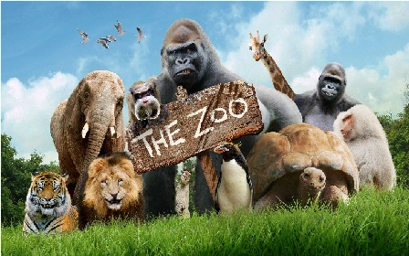
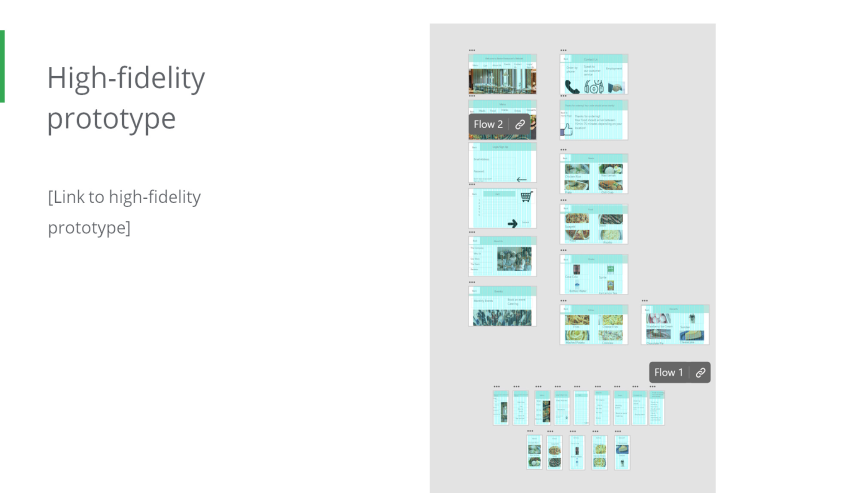
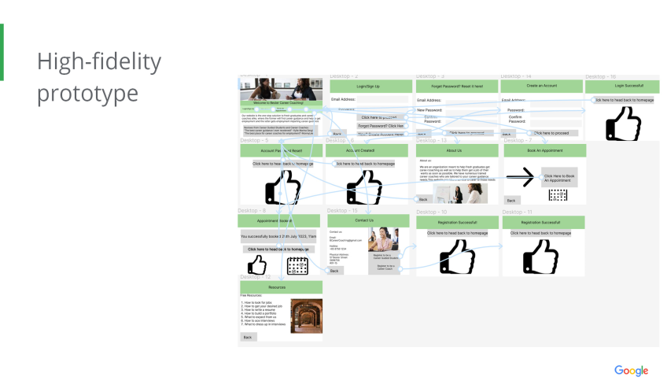

My Portfolio Works
My First(Python) Project
Source Code Link:https://github.com/Swamh/My-Python-Projects/blob/master/MyFirstProject.py
In this project, I practiced the very basics of Python to create get user input
and calculate variables in the code itself
Python Bot Chat
Source Code Link:https://github.com/Swamh/My-Python-Projects/blob/master/PythonBotChat.py
In this project, I practiced the basics of Python to create get user input
of a chatbot, where it asks for user input, utilzing a while loop, an if else statement
and call the functions after defining them
Zoo
Source Code Link:https://github.com/Swamh/My-Python-Projects/blob/master/Zoo.py
In this project, I practiced the very basics of Python to create get user input of a chatbot on which animal in the zoo they want to see and then print out the animals using computer symbols
Loan Calculator(Work in Progress)
Source Code Link:https://github.com/Swamh/My-Python-Projects/blob/master/2outof4.py
In this project, I practiced the basics of Python, to get user input, calculate variables and then printing them out to make a Loan Calculator, like in the banks.
Bester Restaurant Desktop

Source Code Link:https://github.com/Swamh/UXDesign/blob/main/BesterRestaurantDesktop.html
In this project, I practiced my UX Design Skills to make a website to consolidate orders from the restaurant menu
Bester Restaurant Mobile
Source Code Link:https://github.com/Swamh/UXDesign/blob/main/BesterRestaurantMobile.html
In this project, I practiced my UX Design Skills to make a website to consolidate orders from the restaurant menu for mobile users
Bester Career Coaching
Source Code Link:https://github.com/Swamh/UXDesign/blob/main/BesterCareerCoaching.html
In this project, I practiced my UX Design Skills to make a website to to provide career coaching and advice to people seeking employment, for both PC, Tablet and Mobile users